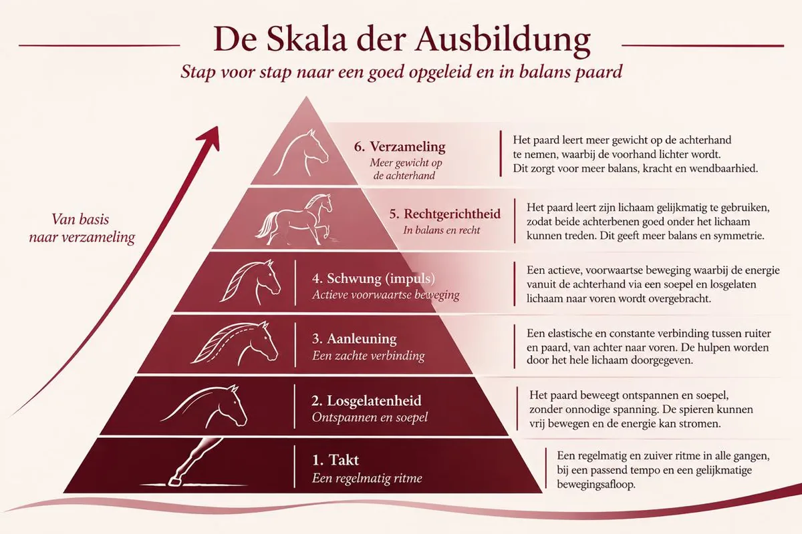

Dit is een opleidingsschaal die bestaat uit zes onderdelen. Samen vormen ze de basis voor een evenwichtige, gezonde en duurzame ontwikkeling van het paard. Je kunt het Skala zien als een piramide: een goede basis is nodig om verder te kunnen bouwen. De onderdelen hangen met elkaar samen en blijven gedurende de hele opleiding belangrijk.
De onderdelen bouwen op elkaar voort, maar beïnvloeden elkaar ook voortdurend. We kijken daarom niet alleen naar welke fase een paard heeft bereikt, maar vooral naar wat het op dat moment nodig heeft.

- Takt Een regelmatig ritme. Een regelmatig en zuiver ritme in alle gangen, bij een passend tempo en een gelijkmatige bewegingsafloop.
- Losgelatenheid Ontspannen en soepel. Het paard beweegt ontspannen en soepel, zonder onnodige spanning. De spieren kunnen vrij bewegen en de energie kan stromen.
- Aanleuning Een zachte verbinding. Een elastische en constante verbinding tussen ruiter en paard, van achter naar voren. De hulpen worden door het hele lichaam doorgegeven.
- Schwung (impuls) Actieve voorwaartse beweging. Een actieve, voorwaartse beweging waarbij de energie vanuit de achterhand via een soepel en losgelaten lichaam naar voren wordt overgebracht.
- Rechtgerichtheid In balans en recht. Het paard leert zijn lichaam gelijkmatig te gebruiken, zodat beide achterbenen goed onder het lichaam kunnen treden. Dit geeft meer balans en symmetrie.
- Verzameling Meer gewicht op de achterhand. Het paard leert meer gewicht op de achterhand te nemen, waarbij de voorhand lichter wordt. Dit zorgt voor meer balans, kracht en wendbaarheid.